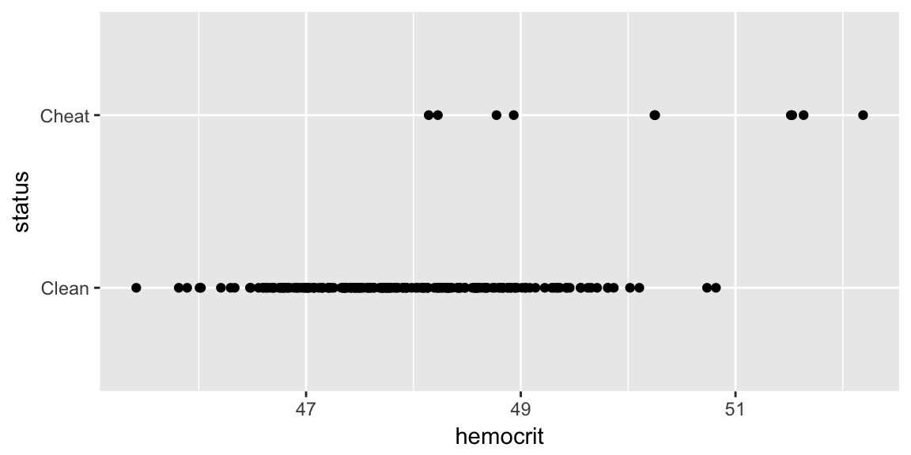
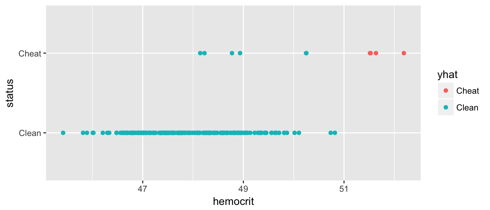
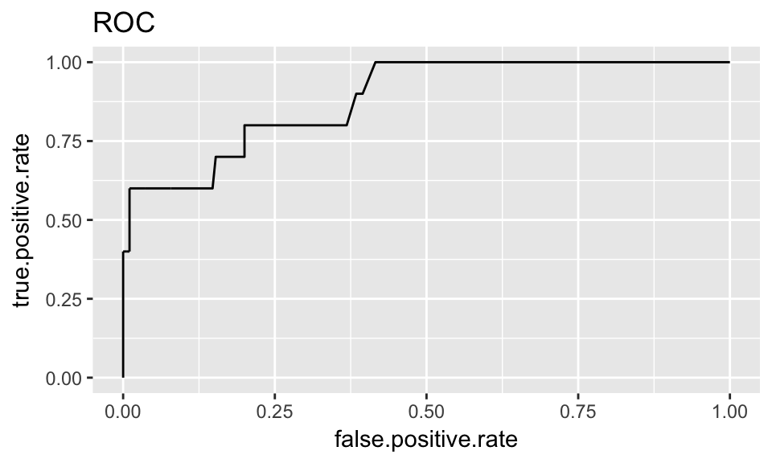

Chapter 6 Another example
## Skipping install of 'dsData' from a github remote, the SHA1 (208be54a) has not changed since last install.
## Use `force = TRUE` to force installationlibrary(devtools)
install_github('dereksonderegger/dsData') # repository of my data sets## Skipping install of 'dsData' from a github remote, the SHA1 (208be54a) has not changed since last install.
## Use `force = TRUE` to force installationlibrary(dsData)
data("Hemocrit", package='dsData')We now consider a case where the number of observations is not the same between groups. Here we consider the case where we are interested in using hemocrit levels to detect if a cyclist is cheating.
#?Hemocrit
ggplot(Hemocrit, aes(x=hemocrit, y=status)) + geom_point()
What if I just naively assume that all professional cyclists are clean? How accurate is this prediction scheme?
mean( Hemocrit$status == 'Clean' )## [1] 0.95In this case, I am pretty accurate because we correctly classify 95% of the cases! Clearly we should be more intelligent. Lets use the LDA to fit a model that uses hemocrit.
model <- lda(status ~ hemocrit, data=Hemocrit)
Hemocrit$yhat <- predict(model)$class
table( Truth=Hemocrit$status, Predicted=Hemocrit$yhat)## Predicted
## Truth Clean Cheat
## Clean 188 2
## Cheat 6 4So this method basically looks to see if the hemocrit level is greater than
(47.91 + 50.14)/2## [1] 49.025and calls them a cheater. Can we choose something a bit more clever? The predict.lda() function also returns the posterior probabilities for each class. In this case, it chooses the category with the highest probability (for two classes than means whichever is greater than 0.50). We can create a different rule that labels somebody a cheater only if the posterior probability is greater than 0.8 or whatever.
pred <- predict(model)
Hemocrit$yhat <- ifelse( pred$posterior[,2] <= .8, 'Clean', 'Cheat' )
mean( Hemocrit$status == Hemocrit$yhat )## [1] 0.97ggplot(Hemocrit, aes(x=hemocrit, y=status, color=yhat)) + geom_point() Great, now we have no false-positives, but a number of folks are getting away with cheating. But what if we back that up, how many false positives do we get… What we want is a graph that compares my false-positive numbers to the true-positives.
cut.offs <- seq(0, 1, length=1001)
results <- data.frame(cut.off=cut.offs,
false.positive.rate=rep(NA,1001),
true.positive.rate=rep(NA,1001))
for( i in 1:length(cut.offs) ){
Hemocrit$yhat <- ifelse( pred$posterior[,2] <= cut.offs[i], 'Clean', 'Cheat' )
# get the factor levels ordered the same way that Hemocrit$status has
Hemocrit$yhat <- factor(Hemocrit$yhat, levels=c('Clean', 'Cheat'))
confusion <- table(Truth=Hemocrit$status, Prediction=Hemocrit$yhat)
results[i,'false.positive.rate'] <- confusion[1,2] / sum( confusion[1,])
results[i, 'true.positive.rate'] <- confusion[2,2] / sum( confusion[2,])
}# make sure we don't wiggle due to repeated observations
results <- results %>% arrange(false.positive.rate, true.positive.rate)
ggplot(results, aes(x=false.positive.rate, y=true.positive.rate)) +
geom_line() +
ggtitle( 'ROC' )